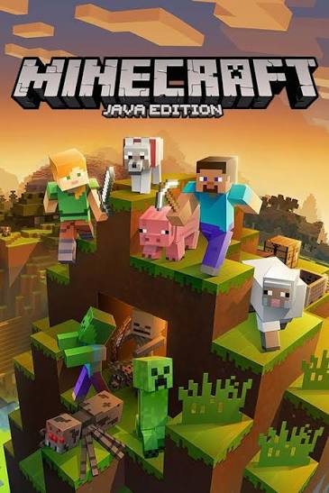
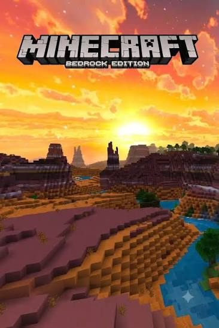

JAVA EDITION
A edição Java
Conhecida por sua comunidade de modificações, servidores personalizados e ampla liberdade para personalizar a experiência no computador.
Explore um universo feito de blocos, onde sua criatividade é o limite. Construa estruturas, descubra novos lugares e enfrente desafios em um mundo cheio de possibilidades.
Conhecer o jogo →
Conheça os principais dados de Minecraft.
Minecraft é um jogo eletrônico de mundo aberto que permite aos jogadores explorar ambientes formados por blocos, coletar recursos e construir praticamente qualquer coisa. O jogador pode escolher como deseja aproveitar a experiência, seja construindo grandes estruturas, explorando cavernas ou enfrentando criaturas.
Descubra as principais diferenças entre as edições Java e Bedrock.

Conhecida por sua comunidade de modificações, servidores personalizados e ampla liberdade para personalizar a experiência no computador.

Disponível em diversas plataformas, permite que jogadores de diferentes dispositivos compartilhem experiências no mesmo mundo.
Conheça a origem e a evolução de um dos jogos mais populares do mundo.
Minecraft foi criado por Markus Persson, conhecido como Notch, e teve sua primeira versão pública lançada em 2009. O jogo chamou atenção pela liberdade oferecida aos jogadores, permitindo explorar ambientes, coletar recursos e construir estruturas.
Em 2011, o jogo recebeu seu lançamento oficial. Posteriormente, passou a ser desenvolvido pela Mojang Studios, que ampliou constantemente suas possibilidades com atualizações, novos recursos e conteúdos.
Ao longo dos anos, Minecraft chegou a diferentes plataformas e conquistou uma comunidade mundial, tornando-se referência entre os jogos de exploração, construção e sobrevivência.
Conheça alguns dos seres encontrados durante as aventuras.
O mundo de Minecraft é habitado por diferentes criaturas, conhecidas como mobs. Algumas são pacíficas, enquanto outras representam desafios durante a exploração.
Entre os personagens mais conhecidos estão Steve e Alex, além de criaturas como Creeper, Zumbi, Esqueleto e Enderman.
Explore diferentes dimensões e ambientes.
O Overworld é a dimensão principal, formada por florestas, montanhas, oceanos, desertos e diversos biomas.
O Nether é uma dimensão perigosa, com ambientes únicos e recursos próprios. Já o End é uma dimensão misteriosa, conhecida por abrigar o Ender Dragon.
Minecraft permite que os jogadores criem mecanismos utilizando redstone, um recurso que funciona de maneira semelhante a circuitos elétricos.
O jogo também possui diferentes modos, como Sobrevivência, Criativo, Aventura e Espectador, cada um oferecendo experiências distintas.
Minecraft ultrapassou os limites do entretenimento, sendo utilizado também em atividades educacionais, projetos criativos e experiências colaborativas.
Sua liberdade de criação e exploração continua inspirando jogadores de diferentes idades e comunidades ao redor do mundo.
Informações sobre o jogo: Site oficial de Minecraft .
Projeto acadêmico — Além do Jogo.